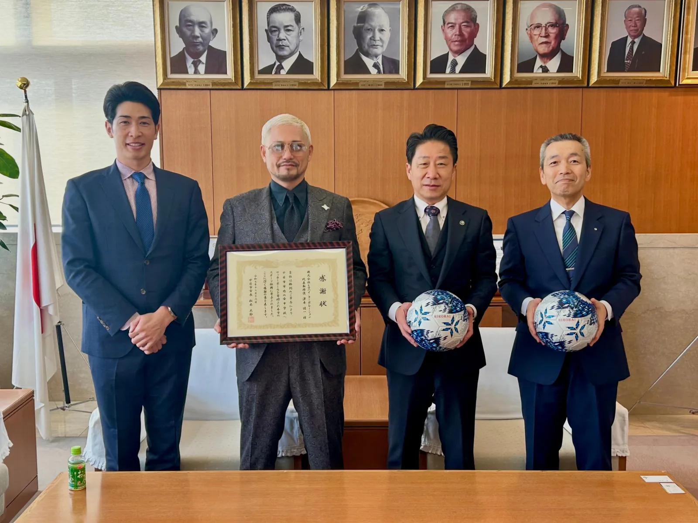

WELLNESS
企業の健康は、
従業員の健康で
支えられている。
「組織のパーソナルトレーナー」として、従業員の健康から会社の生産性を高めます。
ABOUT
「今を大切に、明日を最高に」
「組織のパーソナルトレーナー」として、企業さまにとって一番の財産である従業員に対し、健康プログラムを作成し、ストレス管理や栄養指導等を提供します。従業員の健康促進をサポートすることにより、企業さまの生産性を向上させます。
日々の生活の中に「健康」という概念を浸透させることで、間違った食習慣の改善や運動不足の解消につなげ、健康生活のための新たな行動変容に繋げます。企業として取り組むので、1人ではなく実行する仲間がいることで頑張れて、「意識」が変わります。
企業単位、家族単位に専門家が直接携わることで、健康に関するコミュニケーションが生まれ、いつでも相談しあえる関係が自然とできあがります。
VOICES
「健康診断で指導が入ったのですが、どうしたらいいですか？」
「日々の業務で首肩が辛かったり、慢性的な腰痛をなんとかしたい」
「最近なんだかストレスが溜まって……」
職場から、こんな声が上がっていませんか？
健康は、従業員と真剣に話し合えるコンテンツです。
MERIT
健康経営が企業に与えるメリット
健康経営は今や国からの要請になり「実施しないといけなくなった」取り組みですが、それによって得られる大きなメリットもあります。
1年間で会社を辞めた人の割合（離職率）
認定された会社5.4%
健康経営に取り組む会社は、辞める人が日本全体の半分以下です。
出典：経済産業省「健康経営の推進について」（2021年10月）
- 生産性向上従業員が十分なパフォーマンスを発揮するには、心身ともに健康であることが何より重要です。心身が健康なら、欠勤などの勤怠不良が少なくなるのはもちろん、社内の雰囲気が良くなり、モチベーション向上につながります。
- 人材の定着・確保・採用コスト低減健康経営は、退職者の低減につながります。また、健康経営の取り組みを社会へアピールすることで優秀な人材を採用しやすくなるほか、採用コストの低減にもつながります。
- 企業イメージの向上健康経営に取り組み、審査に通ればホームページや名刺に認定マークを付けることができます。こうした対外的な好印象は信用力そのもので、ブランド力強化に直結します。
- 企業負担の医療費軽減健康経営によって、従業員が病気にかかる頻度・期間が減少します。そのため、企業が所属する健康保険組合による医療費軽減が見込まれます。逆に従業員の疾病が頻出すると、健康保険組合の財政を圧迫し、組合費の高騰につながります。
MONTHLY PLAN
月1回、専門家が会社に来る。
元プロ野球球団のトレーナー、ヨガ講師、鍼灸師、セラピストなど、分野のちがう専門家が毎月交代で、御社の会議室で60分の運動指導を行います。年2回の体力測定で、社員の体の変化を数字でお返しします。
- 月1回・60分の運動指導肩こり・腰痛・姿勢・柔軟・筋力・睡眠など、毎月テーマを変えて行います。社員さまの体にさわる施術は行いません。
- 年2回の体力測定握力・立ち上がり・片足立ちなどを専門の測定スタッフが測ります。結果は本人に、会社さまには名前を伏せた集計でお返しします。
- 毎月の報告書参加人数・続けた人の割合・社員さまの声を1枚にまとめます。
〜20名
50,000円〜/ 月
〜50名
70,000円〜/ 月
〜100名
100,000円〜/ 月
税別・交通費別。最低契約期間12か月。お試し1回 33,000円（30名まで）は、ご契約いただくと初月の料金から差し引きます。
ONE YEAR
測って、続けて、もう一度測る。
1月と12月の測定を比べ、1年間の取り組みの成果を報告書にまとめます。
- 011月 測定最初の体力測定
- 022〜11月 指導毎月テーマを変えて専門家が交代で
- 03毎月 報告参加と継続を1枚に
- 0412月 測定もう一度測って1月と比べる
- 05年間報告1年の変化をまとめてお渡し
CERTIFICATION
健康経営優良法人の取り方
認定の評価項目のうち「運動機会の増進」の部分を、HAKI proがお引き受けします。健康宣言がまだの企業さまには、お申し込みの方法からご案内します。
- 健康宣言に申し込む協会けんぽ広島支部の「ひろしま企業健康宣言」へのエントリー（無料）。申請の前提となる条件です。
- 必須の項目を整える健康宣言を社内外に知らせる、経営者が健康診断を受ける、健康づくりの担当者を置く、など。
- 選んで取り組む項目を進めるこのうち「運動機会の増進」を、月1回の運動指導と体力測定でお引き受けします。
- 申請する経済産業省の「ACTION！健康経営」から、毎年8月〜10月中旬に申請します。
- 認定の発表翌年3月。認定されるとホームページや名刺に認定マークを使えます。
中小規模法人部門の場合。申請は毎年8月〜10月中旬、認定の発表は翌年3月です。来年秋の申請に向けて、1年分の取り組みの記録を残せます。認定の可否は審査によって決まります。
PROGRAM
健康経営 各種プログラム
- 栄養調査栄養調査アプリに入力後、当社契約の栄養調査機関（大学研究室）にて評価し、結果表をオンラインで返信します。回を追うごとに推移が分かるので、その後の食事内容にお役立ていただけます。（年4回実施）
- ストレスチェック自己診断疲労度チェックリストに記入後、身体的・精神的・総合評価の3項目の結果をオンラインでフィードバックします。ストレスリスクが高い従業員さまは、御社のご担当者に個別にご報告します。（年4回実施）
- 出張運動指導当社専属の経験豊富な運動指導者が、御社の会議室やセミナールームで運動指導を実施します。肩こり・腰痛やメタボ対策、ダイエット、姿勢改善など各種プログラムを実施します。
- 産業医選定当社にて産業医の選任をさせていただきます。医師の職場巡視、または健康問題のある従業員さまに対し、当社にて一元管理が可能になります。
- 健康・メンタルヘルス LINE相談窓口健康とメンタルヘルスに関するご相談を、リアルタイムにLINEでお受けします。看護師、薬剤師、理学療法士、管理栄養士など各種専門家が、健康面のさまざまな質問にお答えします。
- 健康セミナー運動・食事を中心に、従業員さまの健康を語る上で必ず知っておいてほしい、健康経営コンサルタントによるセミナーです。ご家族にも共有できる、すぐに実践できる健康法を講義＋実技でわかりやすくご説明します。
- 覇氣セミナー安部友裕が従業員さまに「覇氣」を注入する特別セミナー。結果が出ない時、何をやってもダメな時、どうやってその状況を乗り越えるのか。メンタルの重要性からコンディションを整えることの重要さまで、やる気が出る唯一無二のセミナーです。
- 健康経営優良法人を目指す企業さまへ経済産業省の健康経営優良法人。申請の前提となる協会けんぽ「ひろしま企業健康宣言」のお申し込みをご案内し、認定の評価項目のうち「運動機会の増進」の取り組みと記録をお引き受けします。認定の申請は企業さまご自身で行っていただきます。

DONATION
御社のロゴ入りボールを、地域の学校へ。
硬式球の再生事業とあわせて、バスケットボール・サッカーボール・バレーボールなどに企業さまのロゴを入れ、地域の学校へ寄贈する取り組みも行っています。
寄贈したボールは、休み時間にも体育の授業にも使われます。子どもたちは毎日そのボールを手に取り、ロゴを見て「この会社がくれたボール」と覚えていきます。
社員の健康を大切にする会社が、地域の子どもが体を動かす場も支える。健康経営の取り組みと一緒に、社内にも地域にも伝わる活動です。